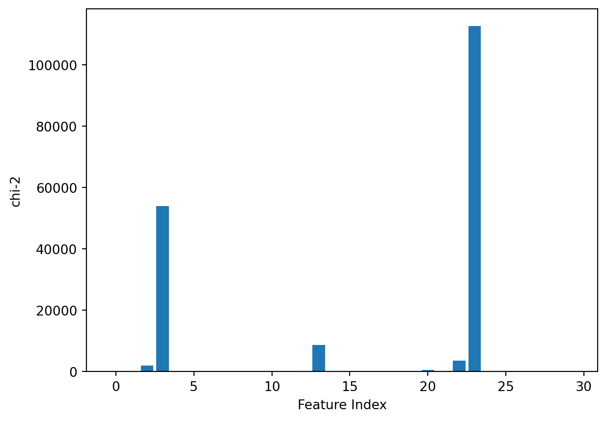

Feature importance analysis is used to understand the usefulness or value of each feature in making predictions. The goal is to identify the most influential features that have the greatest impact on the model’s output. Feature Importance Analysis is widely used in machine learning to enhance model interpretability and performance.
Why is Feature Importance Analysis Important?
In a dataset with dozens or even hundreds of features, each feature may contribute to the performance of your machine learning model. However, not all features are equally valuable. Some may be redundant or irrelevant, increasing the complexity of the model and potentially leading to overfitting. Feature importance analysis helps identify and prioritize the most influential features, improving model efficiency, interpretability, and generalization.
Feature importance analysis helps identify and focus on the most informative features, leading to several key advantages:
Improved Model Performance. By selecting the most relevant features, the model can make more accurate predictions. Removing irrelevant or redundant features helps the model learn more effectively and generalize better to unseen data.
Reduced Overfitting. Using too many features, especially those that are not informative, can cause the model to learn noise rather than meaningful patterns. Feature importance analysis helps eliminate unnecessary features, reducing the risk of overfitting and improving the model’s ability to perform well on new data.
Faster Training and Inference. With fewer but more relevant features, the computational cost of training the model decreases. This leads to faster model training and inference times, making it more efficient for large-scale applications.
Enhanced Interpretability. Understanding which features contribute the most to predictions allows data scientists and domain experts to interpret model decisions more easily. This is particularly important in high-stakes applications like healthcare and finance, where model transparency is crucial.
Now, let’s explore some common methods for feature importance analysis in scikit-learn.
Feature Importance Analysis Methods
Let’s explore Breast cancer wisconsin (diagnostic) dataset. This dataset includes information from 569 instances, with 30 numeric, predictive attributes such as radius, texture, perimeter, etc. Each sample is also labeled with a class that indicates the diagnosis, which can either be malignant (M) or benign (B). This dataset is commonly used for classification tasks, where the goal is to predict whether a tumor is malignant or benign based on the attributes.
from sklearn.datasets import load_breast_cancerX, y = load_breast_cancer (as_frame=True, return_X_y=True)y = y.astype("category")X
mean radius
mean texture
mean perimeter
mean area
mean smoothness
mean compactness
mean concavity
mean concave points
mean symmetry
mean fractal dimension
...
worst radius
worst texture
worst perimeter
worst area
worst smoothness
worst compactness
worst concavity
worst concave points
worst symmetry
worst fractal dimension
0
17.99
10.38
122.80
1001.0
0.11840
0.27760
0.30010
0.14710
0.2419
0.07871
...
25.380
17.33
184.60
2019.0
0.16220
0.66560
0.7119
0.2654
0.4601
0.11890
1
20.57
17.77
132.90
1326.0
0.08474
0.07864
0.08690
0.07017
0.1812
0.05667
...
24.990
23.41
158.80
1956.0
0.12380
0.18660
0.2416
0.1860
0.2750
0.08902
2
19.69
21.25
130.00
1203.0
0.10960
0.15990
0.19740
0.12790
0.2069
0.05999
...
23.570
25.53
152.50
1709.0
0.14440
0.42450
0.4504
0.2430
0.3613
0.08758
3
11.42
20.38
77.58
386.1
0.14250
0.28390
0.24140
0.10520
0.2597
0.09744
...
14.910
26.50
98.87
567.7
0.20980
0.86630
0.6869
0.2575
0.6638
0.17300
4
20.29
14.34
135.10
1297.0
0.10030
0.13280
0.19800
0.10430
0.1809
0.05883
...
22.540
16.67
152.20
1575.0
0.13740
0.20500
0.4000
0.1625
0.2364
0.07678
...
...
...
...
...
...
...
...
...
...
...
...
...
...
...
...
...
...
...
...
...
...
564
21.56
22.39
142.00
1479.0
0.11100
0.11590
0.24390
0.13890
0.1726
0.05623
...
25.450
26.40
166.10
2027.0
0.14100
0.21130
0.4107
0.2216
0.2060
0.07115
565
20.13
28.25
131.20
1261.0
0.09780
0.10340
0.14400
0.09791
0.1752
0.05533
...
23.690
38.25
155.00
1731.0
0.11660
0.19220
0.3215
0.1628
0.2572
0.06637
566
16.60
28.08
108.30
858.1
0.08455
0.10230
0.09251
0.05302
0.1590
0.05648
...
18.980
34.12
126.70
1124.0
0.11390
0.30940
0.3403
0.1418
0.2218
0.07820
567
20.60
29.33
140.10
1265.0
0.11780
0.27700
0.35140
0.15200
0.2397
0.07016
...
25.740
39.42
184.60
1821.0
0.16500
0.86810
0.9387
0.2650
0.4087
0.12400
568
7.76
24.54
47.92
181.0
0.05263
0.04362
0.00000
0.00000
0.1587
0.05884
...
9.456
30.37
59.16
268.6
0.08996
0.06444
0.0000
0.0000
0.2871
0.07039
569 rows × 30 columns
Let’s get the attribute names.
from sklearn.datasets import load_breast_cancer# load datasetX, y = load_breast_cancer (as_frame=True, return_X_y=True)# get attribute informationcolumn_names = X.columnsfor index, column_name inenumerate(column_names):print(index, column_name)
0 mean radius
1 mean texture
2 mean perimeter
3 mean area
4 mean smoothness
5 mean compactness
6 mean concavity
7 mean concave points
8 mean symmetry
9 mean fractal dimension
10 radius error
11 texture error
12 perimeter error
13 area error
14 smoothness error
15 compactness error
16 concavity error
17 concave points error
18 symmetry error
19 fractal dimension error
20 worst radius
21 worst texture
22 worst perimeter
23 worst area
24 worst smoothness
25 worst compactness
26 worst concavity
27 worst concave points
28 worst symmetry
29 worst fractal dimension
Built-in Feature Importance
Machine learning models such as linear regression and random forests have built-in capabilities to directly output feature importance scores. These scores provide insight into the contribution of each feature to the final prediction made by the model. Understanding feature importance is crucial, as it helps identify which input variables are the most influential in determining the model’s output.
For example, Random Forests Model evaluates how much each feature contributes to reducing the error in the model’s predictions. The attribute feature_importances_ can be used to access this information. In Random Forests, features that lead to larger reductions in prediction error across the trees are assigned higher importance scores. The importance score for a feature is typically calculated by aggregating the reduction in impurity (e.g., Gini impurity or entropy) across all the trees in the forest, weighted by the number of samples each tree uses.
from sklearn.datasets import load_breast_cancerfrom sklearn.ensemble import RandomForestClassifierimport matplotlib.pyplot as plt# load datasetX, y = load_breast_cancer(return_X_y=True)# train modelrf = RandomForestClassifier(n_estimators=100, random_state=1)rf.fit(X, y)# get feature importancesimportances = rf.feature_importances_# plot importancesplt.bar(range(X.shape[1]), importances)plt.xlabel('Feature Index')plt.ylabel('Feature Importance')plt.show()
For features with high feature importance, it indicates that the feature is very useful in distinguishing between malignant and benign tumors, and the model relies on it to make predictions.
For features with low feature importance, it suggests that the feature has a minimal impact on the model’s predictions. This feature may not contribute significantly to distinguishing the target variable (whether the tumor is malignant or benign).
Recursive Feature Elimination (RFE)
Recursive Feature Elimination (RFE) is a feature selection method that recursively removes features and evaluates the impact on the performance of the model. The process works by fitting the model multiple times and progressively eliminating the least important features based on a certain criterion, such as the feature’s weight or coefficient. By repeatedly evaluating the model’s performance, RFE identifies which features contribute the most to the model’s predictive power.
In sklearn, RFE can be implemented using the RFE class. This function allows users to specify the estimator (such as a linear regression or decision tree model) that will be used to evaluate the importance of each feature. The n_features_to_select parameter specifies how many features to keep, and the process will stop once the specified number of features is reached.
from sklearn.datasets import load_breast_cancerfrom sklearn.ensemble import RandomForestClassifierfrom sklearn.feature_selection import RFEimport pandas as pdimport matplotlib.pyplot as plt# load datasetX, y = load_breast_cancer(as_frame=True,return_X_y=True)# train modelrf = RandomForestClassifier()rfe = RFE(rf, n_features_to_select=10)rfe.fit(X, y)# print importanceprint(rfe.ranking_)
For the output array, each element corresponds to the ranking of the respective feature, with a higher rank indicating greater feature importance.
Permutation Importance
Permutation Importance evaluates the importance of each feature by randomly shuffling its values and observing how the model’s performance decreases. This method works by permuting (randomizing) the values of each feature one at a time and measuring the impact on the model’s accuracy.
In sklearn, the permutation_importance function can be used to compute permutation importance scores. This function takes the fitted model, the validation data, and the target values as inputs and returns the importance scores for each feature based on how much the model’s performance drops when the feature is permuted.
A feature with high permutation importance indicates that when its values are randomly shuffled, the model’s performance (e.g., accuracy, mean squared error) drops significantly. This suggests that the feature contains crucial information that strongly influences the target variable.
A feature with low permutation importance means that when its values are randomly shuffled, the model’s performance remains nearly unchanged. This implies that the feature may be irrelevant, redundant, or contain too much noise. Such features can be considered for removal or further analysis to assess their necessity.
Analysis of Variance (ANOVA)
Analysis of Variance (ANOVA) is a statistical method used to analyze the differences among group means and their associated variances. In the context of feature importance analysis, ANOVA is used to determine how strongly each feature is related to the target variable.
In sklearn, the f_classif() function is commonly used to perform ANOVA for classification tasks. It calculates the F-statistic for each feature, which measures the ratio of variance between groups to the variance within the groups.
from sklearn.datasets import load_breast_cancerfrom sklearn.feature_selection import f_classifimport pandas as pdimport matplotlib.pyplot as plt# load datasetX, y = load_breast_cancer(as_frame=True,return_X_y=True)# ANOVAdf = pd.DataFrame(X, columns=range(len(X.columns)))df['y'] = yfval = f_classif(X, y)fval = pd.Series(fval[0], index=range(X.shape[1]))# plot importancesplt.bar(range(X.shape[1]), fval)plt.xlabel('Feature Index')plt.ylabel('F-value')plt.show()
A feature with a higher F-value indicates that it provides more information about the target variable. It suggests that the feature is more discriminative in separating different classes.
A low F-value means that the feature is not very useful for distinguishing between the target variable’s categories, suggesting a weaker relationship.
Chi-Square Test
The Chi-Square Test is a statistical method used to assess whether there is a significant relationship between two categorical variables. In the context of feature importance analysis, the Chi-Square test is commonly used to evaluate the independence of each feature from the target variable.
In sklearn, the chi2() function is used to perform the Chi-Square test for feature selection. It calculates the Chi-Square statistic for each feature, which measures how much the observed frequency of feature categories deviates from the expected frequency if the feature and target were independent.
from sklearn.datasets import load_breast_cancerfrom sklearn.feature_selection import chi2import pandas as pdimport matplotlib.pyplot as plt# load datasetX, y = load_breast_cancer(as_frame=True,return_X_y=True)# chi-2df = pd.DataFrame(X, columns=range(len(X.columns)))df['y'] = ychi_scores = chi2(X, y)chi_scores = pd.Series(chi_scores[0], index=range(X.shape[1]))# plot importancesplt.bar(range(X.shape[1]), chi_scores)plt.xlabel('Feature Index')plt.ylabel('chi-2')plt.show()

A feature with a high Chi-Square statistic suggests that the feature is dependent on the target variable. This means the feature has a significant relationship with the target and is likely useful for prediction.
A low Chi-Square statistic indicates that the feature is independent of the target variable, meaning it does not provide useful information for prediction.